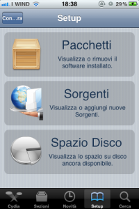

{kind=link}
Con l’avvento dei nuovi dispositi Apple, gli iPhone 4 e gli iPod Touch 4G, molti nuovi utenti si sono avvicinati al mondo del Jailbreak e molti si sono subito smarriti in questo mondo, tale è il numero di informazioni che bisogna imparare ed assimilare. Quindi adesso riassumeremo dettagliatamente in questo articolo tutto ciò che c’è da sapere su Jailbreak e Cydia e ciò che gira attorno ad essi.
Innanzitutto parliamo del Jailbreak. Tutti i nuovi utenti di Device Apple (così vengono chiamati gli iPhone, gli iPod Touch e gli iPad, in gergo internet) sapranno che se si vuole una particolare applicazione, la si cerca nell’App Store. E spesso si trova. Purtroppo non tutte le Applicazioni che cerchiamo si trovano sull’App Store, poiché le Applicazioni che troviamo in questo Store subiscono una vera e propria selezione, e se non la passano vengono scartate. Così è successo per milioni di Applicazioni utili che nell’AppStore non troviamo, visto che papà Jobs non le vuole. Come facciamo allora se vogliamo una di queste applicazioni?
Entra in gioco a questo punto il Jailbreak, un modo semplice per installare nel nostro dispositivo Applicazioni di terze parti (ovvero non provenienti da Apple) un po’ come Android.
Il Jailbreak purtroppo non è acconsentito da Apple (ma va’), e per questo fino a poco tempo fa era una procedura illegale. Fortunatamente per noi utenti, tempo fa un Giudice Americano ha sentenziato che il Jailbreak è legale! Quindi adesso si può applicare senza paura.
Tornando al Jailbreak, si applica tramite dei programmi, chiamati Tool, che si installano sul nostro sistema operativo e tramite delle procedure automatiche, eliminano il blocco imposto da Apple per non farci scaricare applicazioni di terze parti dal nostro Device.
Detto questo è il momento di spiegare la differenza tra Jailbreak Tethered e Jailbreak Untethered. Come dicevo prima purtroppo Apple applica dei blocchi ai Device, e i Jailbreakers (coloro che applicano il Jailbreak) cercano dei Buchi (bugs) all’interno dei Firmware (nel gergo comune viene associato al Sistema Operativo) dei Device. Una volta trovato il bug, passando da quello entrano nel Firmware e applicano il Jailbreak. Purtroppo non sempre i blocchi imposti da Apple sono facili da aggirare, per questo il Jailbreak varia dalla potenza dei Blocchi imposti da Apple.
Il Jailbreak Tethered è un Jailbreak instabile. Questo tipo di Jailbreak si azzera ogni volta che si spegne il Device, e blocca il dispositivo, per questo motivo è necessario non spegnere il Device, per non perdere il Jailbreak e dover essere costretti a Ripristinare il telefono, che si blocca.
Il Jailbreak Untethered, invece, è un Jailbreak stabile e per questo ci permette di spegnere il Device, poiché alla riaccensione lo troveremo come lo avevamo lasciato, Jailbreak e tutto il resto.
Esistono anche due diversi livelli di Jailbreak. Il Jailbreak Userland e il Jailbreak Bootrom.
Il Jailbreak Userland è un Jailbreak a livello del Firmware, sfrutta un bug del Firmware e per questo può facilmente essere corretto nel aggiornamento successivo del Firmware stesso. Ad esempio, se posseggo un firmware 4.0.1 con Jailbreak Userland, probabilmente (anzi, potete esserne certi) Apple “tapperà” il buco sfruttato dal Jailbreak nel prossimo Firmware 4.0.2 (come è realmente accaduto).
Il Jailbreak Bootrom, invece, agisce sulla Bootrom, ovvero una componente Hardware del Device, per cui l’unico modo che Apple ha per “tappare il buco” è quello di aggiornare l’Hardware, facendolo uscire con una nuova tipologia di Device (come accadde per gli iPhone 3GS Old Bootrom e New Bootrom). Sostanzialmente, quindi, i Device supportati da questo Jailbreak, lo avranno a Vita!
Una volta applicato il jailbreak con il tool corrispondente al nostro dispositivo (N.B.: non tutti i tool sono compatibili con Tutti i Device, quindi fai molta attenzione!), ci ritroveremo un Applicazione in più, Cydia.
Cydia è come un secondo App Store, che ci permette di installare Applicazioni che Apple non approva, ma che rendono il nostro dispositivo molto più personalizzabile e potente!
Vediamo come funziona.
Innanzitutto tengo a precisare che Cydia è in Inglese, ma tramite una procedura lo renderemo in Italiano o in qualsiasi altra lingua.
Alla prima apertura Cydia farà un download dei Packages (le applicazioni di Cydia) e subito dopo si chiuderà e riavvierà il dispositivo. Una volta riacceso il nostro Device e aperto Cydia, ci ritroveremo la schermata Home di Cydia.

Per selezionare i Packages da installare basta selezionarli dalla lista o cercarle tramite “Cerca”. Se andiamo in ”Manage” invece troveremo tre diciture: Packages (che ci indica i Packages che abbiamo installato), Source (che ci permette di aggiungere repository, ovvero altri siti dal quale scaricare Packages), e Spazio Disco che ci permette di visualizzare lo spazio occupato dai Packages.
Per aggiungere Repository, basta andare in Source (Sorgenti nell’immagine)

premere Edit e poi Add. A questo punto inseriamo una repository (N.B.: le repository da aggiungere si ricavano dai siti che le posseggono o da qualche guida che ci suggerisce un Package). Noterete che ci sono già delle Repository già installate di default, e che non potete cancellare (se pure ci riusciste, NON Fatelo!).
Altra cosa importante da sapere cos’è l‘iBoot. Avete presente la Bootrom di prima? Si chiama anche iBoot. Tutto qui. New iBoot e Old iBoot sono rispettivamente Nuova Bootrom e Vecchia Bootrom. Differenze tra le due: la vecchia aveva la possibilità di un jailbreak Bootrom, mentre la nuova non permetteva un Jailbreak diverso dal Jailbreak Userland. Adesso con Limera1n e Greenpois0n non sussiste più questa differenza.
Molti si chiedono spesso cosa sia la BaseBand. La BaseBand non è altro che la una sezione del Firmware degli iPhone che gestisce le SIM. Chi compra un iPhone in America, o in un paese differente dall’Italia, spesso ha il problema di sbloccare la BaseBand in quanto la Apple ha pensato bene di differenziare gli iPhone tra i vari paesi, così che se compri un iPhone in America potrai installare solo SIM americane, in Italia solo italiane, e così via…
In questo caso ci viene in aiuto sempre il jailbreak che tramite Cydia ci permette di installare un Package che rende il nostro iPhone compatibile con tutte le SIM. Questo pacchetto si chiama Ultrasn0w. È disponibile di Default su Cydia.

Tutti avrete sentito parlare di Downgrade, cioè tornare da una versione aggiornata del Firmware ad una precedente. Con l’avvento del Jailbreak, la Apple ha congeniato un sistema per non permettere un Downgrade. Ecco come funziona:
Andando su iTunes, dal nostro computer, abbiamo sempre tutti trovato, nella schermata del Device (iPad, iPod Touch o iPhone che sia), il tasto Ripristina. Tramite quel tasto possiamo ripristinare da zero il nostro Device. Sempre tramite quel tasto, attraverso questa guida, vi abbiamo spiegato come salvare con Tiny Umbrella il certificato ShSh, mentre con quest’altra guida abbiamo spiegato come utilizzare il certificato salvato per effettuare un Downgrade!
Spieghiamo ora cos’è Ecid (o “ShSh”) e a cosa serve. Apple per evitare il Ripristino di versioni precedenti dei Firmware, ha pensato di rilasciare assieme all’aggiornamento del firmware anche un altro file, chiamato Ecid. Questo file è un permesso che viene inviato al nostro iTunes, che non installa il firmware senza questo permesso. Il certificato Ecid viene rilasciato dai server Apple, e, quando viene rilasciato un nuovo firmware, smette di rilasciare il certificato Ecid del firmware precedente. In più il certificato Ecid è nominale, ovvero è diverso per ogni dispositivo.
Quindi è impossibile effettuare un Downgrade senza Ecid.
Ecco che entra in gioco Tiny Umbrella, un programma che salva sul nostro computer il Nostro Certificato Ecid, e, prendendo in giro iTunes, gli fa credere di essere un server Apple, approvando il ripristino della versione di quel Firmware del quale abbiamo il Certificato Ecid (detto anche “ShSh”).
Ecco tutto quello che bisogna sapere per effettuare un jailbreak, così da non perdersi in questo complicato, ma fantastico mondo del Jailbreak.
Se ho saltato qualcosa o volete chiarimenti, lasciate un commento, vi risponderò entro 24 ore!
Pingback: Rilasciato il firmware 4.3 per dispositivi iOS! | Mauro's Page
Pingback: iOS 5 è arrivato: il problema è aggiornare! | Mauro's Page